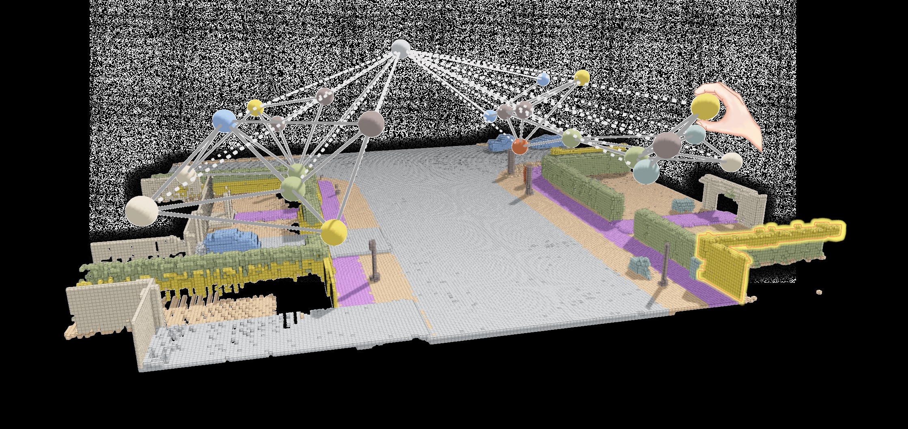
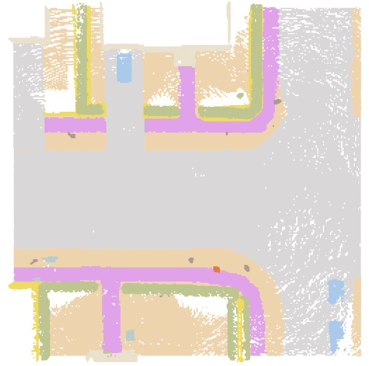

Controllable：通过场景图生成 3D 室外场景
简单摘要
三维场景生成是计算机视觉的核心任务，在自动驾驶、游戏和元宇宙等领域有广泛应用。现有生成方法存在明显不足：一类缺乏用户控制能力，生成结果难以定向调整；另一类依赖不精确、非直观的控制条件(如文本描述或粗略草图)。本文提出以场景图(scene graph)作为可控条件生成室外3D场景的方法——场景图是一种用户友好、易于创建和修改的控制格式，可直观描述场景中物体的类别、属性和相互关系。开发了交互式系统：将用户输入的稀疏场景图通过BEV嵌入模型转换为密集的鸟瞰视角(BEV)嵌入地图，再以BEV嵌入地图引导条件扩散模型生成与场景图描述相匹配的3D场景。为训练BEV嵌入模型和条件扩散模型构建了大规模包含配对场景图和3D语义场景的数据集。推理阶段用户可灵活创建新场景图或修改已有场景图来生成大规模室外场景。据作者所知这是首个以场景图为条件生成3D室外场景的工作。

核心创新
首次提出以场景图(scene graph)作为可控条件生成3D室外场景，场景图作为一种直观、用户友好的控制格式显著降低了3D场景生成的操作门槛。设计交互式系统架构：将稀疏场景图通过BEV嵌入模型转换为密集的BEV嵌入地图，再以BEV嵌入作为条件引导扩散模型。构建大规模配对数据集包含场景图与对应的3D语义场景。推理阶段支持用户灵活创建和修改场景图，实现大规模室外场景的交互式生成与迭代编辑。
技术细节

该方法使用场景图（scene graph）作为可控条件生成3D室外场景，整体流程包括三个核心阶段：首先通过图神经网络将场景图转换为稠密BEV嵌入图（BEM），然后通过2D离散扩散模型从BEM生成2D语义地图，最后通过3D离散扩散模型从2D地图生成完整的3D场景。
**场景图形式化定义**
场景图由节点和边组成G=(V,E)。节点分为两类：实例节点V_ins表示可数物体（如车辆、行人），每个实例节点关联特征向量f_i=[a_i, p_i]，其中a_i为节点属性（语义标签等），p_i为BEV地图中的2D中心坐标。场景道路节点V_road为单一节点，定义道路结构和其他全局背景信息。边也分为两类：物理邻近边——任意两个实例节点间欧氏距离小于阈值tau时建立边；道路连通边——每个实例节点与道路节点之间建立边。实践中使用简化的场景图以方便用户交互：每个实例节点仅包含语义标签和近似的2D位置（表示为网格索引），道路节点以道路类型表示。
**图神经网络与BEV嵌入图**
场景图神经网络（如图[Figure N]所示）使用图注意力网络（GAT）生成捕获局部结构和全局上下文信息的节点嵌入。给定图G和邻接矩阵A，通过两层GAT计算节点嵌入。为融入全局上下文，将每个节点的嵌入与全局池化嵌入拼接：h^CANE_i = [h_i || MLP(Pool({h_j}))]。该输出称为上下文感知节点嵌入（CANE）。
GNN的训练包含辅助任务和下游任务。辅助任务包括：使用图自动编码器（GAE）的边重建损失（BCE损失，重建邻接矩阵A的全局边结构）和节点分类损失（将每个节点分类回原始类别），确保网络学习结构关系和节点特征。下游任务中，CANE嵌入通过分配模块转换为BEV嵌入图（BEM，如图[Figure N]所示）：BEM = Sigma_i b_i * h^CANE_i，其中b_i为二值位置指示图。推理时位置通过MLP定位头（使用Gumbel softmax）采样，训练时使用真值位置。分配模块有效将不规则稀疏图表示转化为稠密2D图，便于后续2D扩散过程。
**2D地图离散扩散**
给定场景图可能存在多种符合其结构的2D地图。使用离散扩散模型将稀疏场景图嵌入转化为稠密2D地图表示M_2D in {0,...,C-1}^{H*W}，其中C为语义类别数。前向过程在T步内使用转移矩阵Q逐渐破坏2D地图，通过累积矩阵Q_bar_t可直接从原始地图采样加噪版本。反向过程中，模型p_theta学习从噪声图M_t预测去噪图M_{t-1}，以BEM为条件进行引导。损失函数为KL散度加辅助重建项。推理时从随机噪声出发，用学习的反向扩散生成稠密2D地图。GNN和2D地图扩散模型联合训练。
**3D场景离散扩散**
将生成的2D地图转换为稠密3D场景（如图[Figure N]所示），同样使用离散扩散过程。3D场景定义为M_3D in {0,...,C-1}^{H*W*D}。3D扩散遵循与2D情况相同的前向和反向步骤，但在3D场景网格上操作。可学习模型q_phi预测每步去噪状态，以输入2D地图M_2D为上采样条件。推理时从噪声3D状态开始，应用反向扩散过程生成与2D地图空间布局对齐的完整3D场景。
**交互式控制系统**
开发了交互式控制系统（如图[Figure N]所示），核心是一个图形界面，用户可通过节点添加、删除和位置调整等直观操作精确构建和修改场景图，实现细粒度控制。用户还可提供文本提示，由大语言模型处理生成对应的场景图，再输入到方法中生成最终3D场景。
实验结论
基于第 2 节中讨论的场景图公式，我们从 CarlaSC 中的每个 3D 语义图中提取 3D 场景图，并将其投影到 2D 上。此外，我们还进行了用户研究，以感知评估生成场景的场景图对齐情况。我们使用平均交并集 (mIoU) 和平均准确度 (MA) 来评估语义合理性。
在 2D 扩散模型和 GNN 的联合训练过程中，我们应用了数据增强，并为扩散模型包含了 10% 的无条件数据。在推理过程中，我们将分配模块中的 Gumbel 温度设置为 2.0，以在生成的场景中引入随机性。我们在联合训练设置中采用扩散模型和 GNN。
4.1 数据准备
由于缺乏现有 3D 室外 LiDAR 场景的配对场景图数据，我们从 CarlaSC 数据集中的每个场景生成场景图数据，创建一个名为 CarlaSG 的新数据集。基于第 2 节中讨论的场景图公式，我们从 CarlaSC 中的每个 3D 语义图中提取 3D 场景图，并将其投影到 2D 上。图中提供了 3D 室外场景及其场景图的示例。
4.2 评估协议
我们从两个方面评估我们的方法。此外，我们还进行了用户研究，以感知评估生成场景的场景图对齐情况。我们使用平均交并集 (mIoU) 和平均准确度 (MA) 来评估语义合理性。
4.3 实验设置
在 2D 扩散模型和 GNN 的联合训练过程中，我们应用了数据增强，并为扩散模型包含了 10% 的无条件数据。在推理过程中，我们将分配模块中的 Gumbel 温度设置为 2.0，以在生成的场景中引入随机性。我们在联合训练设置中采用扩散模型和 GNN。
4.4 主要结果
相比之下，LLM 和 SG2Im 方法生成的场景显示大多数类别的对象计数存在显着差异，并且生成的道路类型与预期配置有很大差异。同时，在控制能力方面，我们的方法优于所有指标的基线，实现了低于 1.0 的低 MAE 值，展示了对对象数量的精确控制。此外，我们的方法实现了更高的杰卡德指数，反映了其从跨不同场景的场景图中捕获对象类别的有效性。
4.5 消融实验和用户研究
结果表明，场景质量（mIoU 和 MA）随着无条件比例的增加而提高，在 0.1 处有明显的瓶颈。如表所示，这两项任务都产生了最佳性能，MAE 较低，为 0.63，Jaccard 指数较高，为 0.93。如表和图所示，策略（d）取得了最好的性能。
| Reconstruction | Classification | MAE (\\) | Jaccard |
|---|---|---|---|
| 51 | 51 | 0.63 | 0.93 |
| 51 | 55 | 0.89 | 0.84 |
| 55 | 51 | 0.80 | 0.83 |
| 55 | 55 | 0.79 | 0.81 |
| Diffusion | GNN | LOC | MAE (\\) | Jaccard |
|---|---|---|---|---|
| Pre-train | Pre-train | Pre-train | 0.79 | 0.88 |
| Scratch | Scratch | Scratch | 1.01 | 0.82 |
| Scratch | Pre-train | Pre-train | 0.95 | 0.90 |
| Scratch | Scratch | Post-train | 0.63 | 0.93 |
理解评价
如果把这篇论文放回问题背景里看，它真正的价值在于：在这项工作中，我们提出了一种使用场景图（一种可访问的、用户友好的控制格式）来生成户外 3D 场景的方法。这说明作者不是只补一个局部模块，而是在重新组织问题该怎样被解决。
当然，它离真正成熟的方案还有距离：当前方案的局限在于它仍然受制于计算资源、输入质量或场景复杂度，距离真正稳健的大规模部署还有差距。后续更值得继续推进的方向，是 未来继续提升效率、泛化能力以及在更复杂场景下的稳定性。